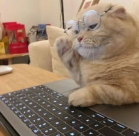
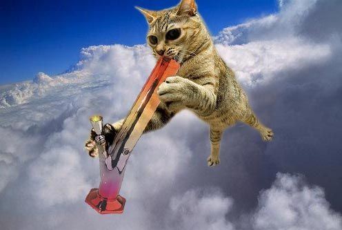
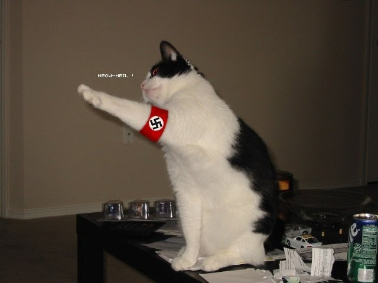
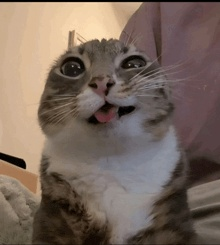

Gato renace gracias al poder de linux
Un recorrido por la emotiva historia que hizo llorar a toda una myau-cion.
Leer noticia completaNoticias
Descubre las últimas actualizaciones y eventos de nuestra red.
Mira... anda a saber tu.

Un recorrido por la emotiva historia que hizo llorar a toda una myau-cion.
Leer noticia completa
Un gato shushesumadre se piteo al gato linux despues de pegarse unos pipasos a lo bien
Leer noticia completa
Gato qliao bakan ojala fuera mio.
Leer noticia completa
Este no es un meme es un grito de ayuda porfavor estoy encerrado en el sotano de una chica gotica hace mas de 2 meses.
...Que??